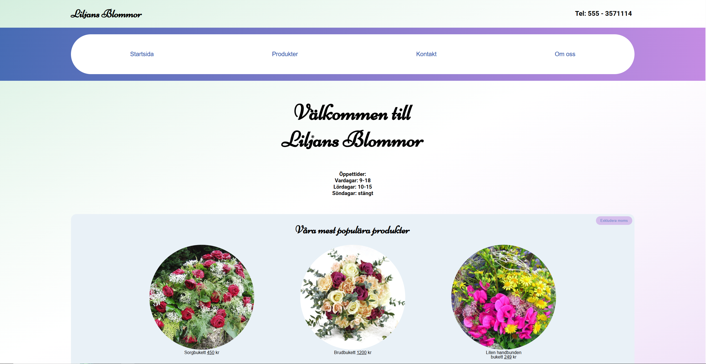

Aaron Lindahl
____________ (role)
Uppsala, Sweden
Portfolio and Projects
Fjellporten Hemsida Liljans Blommor GraveGuard


- Tekniskt 4 år. NTI gymnaset | 2026 - pågående
- Informationsteknologi - möjligheter och utmaningar
- Introduction till ledarskap
- Kvalitetsteknik
- Teknik med inriktning på Information och medieteknik på grillska gymnaset
- Vd för uf företag - posters n crafts
About
As a person i whould describe myself as easygoing yet profesional,
in a work enviorment i am dedicated to my work and good at adapting to any new chalanges that may come my way.
My ability to learn and adapt quickly is one of my biggest strengths.
My bigest weaknes is my abilitly or lack there of to retain cirtan information,
however that also means that i get a fresh look or perspective on a problem i may have strugled with previusly.
My hopes are that i can further my knowledge of industry standard products,
what is expected of an engineer in this branch and to create something i can be proud of.
My native language is Swedish and i am fluent in english.
Education
Unviersitets utbildning | 2025 - 2026 (eller 2025 lite o säker)
Gymnasie utbildning | 2022 - 2025 (är också o säker)